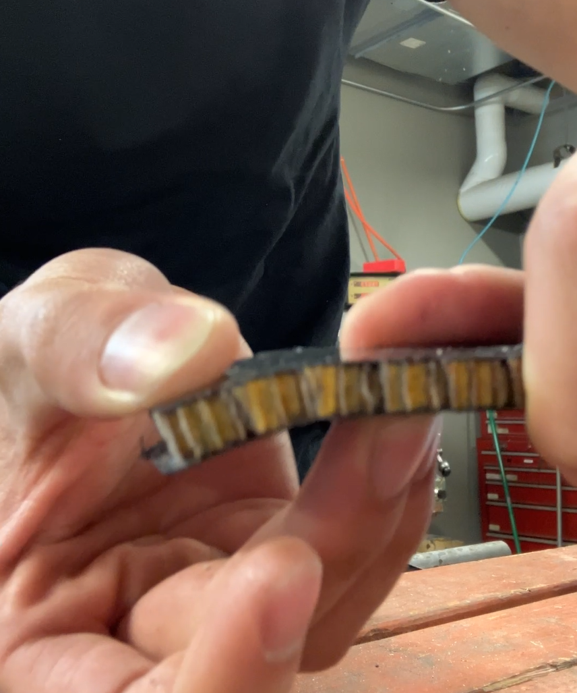
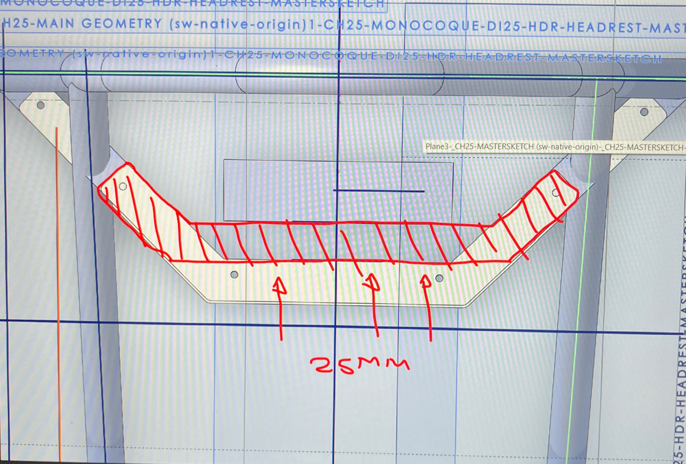

Domains
-
Design for Manufacturing (DFM)
Computer-Aided Engineering (CAE)
User Research
Ergonomic Testing
Fabrication
Presentations/Briefing
Tools
-
Solidworks
ANSYS FEA
CNC Machining
Carbon Fiber Layup
Welding
Waterjetting
Synopsis
-
Led the complete redesign of the carbon fiber headrest structure on a Formula SAE race car, achieving a weight reduction of 50%.

Project is ongoing, more details can be found on resume.
As One of the Few Industrial Designers in an Engineering Club, I Was Tasked with Leading the Complete Redesign of the Carbon Fiber Headrest Structure
Achieving weight reduction of 50%, while increasing strength by 20%.
I collaborated extensively with a diverse range of interdisciplinary teams, learned to do ANSYS structural FEA, and practiced DFM principles. All while figuring out the quirks of a new material—pre-preg carbon fiber—never before used in the headrest structure.

The 25E Race Car—Carnegie Mellon Racing builds an electric race-car from scratch every year to compete in FSAE competitions.
Ultra Lightweight.
The entire headrest system weighs just 254g (or 198g without hardware), because of its carbon fiber construction, a significant weight reduction compared to aluminum alternatives. Carbon fiber combines exceptional strength with minimal weight—crucial for maximizing on-track performance.
Safety First.
Fully rules compliant and designed to meet all safety regulations,
this design is able to withstand up to 900 N of force in a rearward direction, and 300 N in a lateral or vertical direction, validated in both Ansys Mechanical and physical stress testing.
Designed for Easy Maintenance.
Repairability and servicability is crucial when designing for a component that withstands wear and tear on the track. The disasembly process is simple and allows for easy part replacement.

Assembly or disassebly takes less than 2 minutes.

The Task.
-
Setting Overarching Goals.
The headrest is part of the driver interface safety system, protecting the head of the driver in case of a rollover alongside the rollcage.
As a major point of contact with the driver, there were 3 overarching goals:
1. Be as lightweight as possible to aid in the race car's 475lb weight limit and 4.8s skidpad time
2. Be as safe and as ergononic as possible to accommodate a wide range of drivers, for at least 125km of track testing
3. Be as robust and reliable as possible, and be easy to repair if needed.
Understanding Rules & Regulations.
T.2.8.4: “The Head Restraint, attachment and mounting must be strong enough to withstand a minimum force of:
a. 900 N applied in a rearward direction and b. 300 N applied in a lateral or vertical direction.”
T.2.8.5: “For all drivers, the Head Restraint must be located and adjusted where:
a. The Head Restraint is no more than 25 mm away from the back of the driver’s helmet, with the driver in their normal driving position and b.
The contact point of the back of the driver’s helmet on the Head Restraint is no less than 50 mm from any edge of the Head Restraint."
Design Process.
-
Early Stage Brainstorming.
I decided that a one-piece arm design would be most suitable because of it's simplicity and durability.
Additionally, I investigated the possibilities of incorporating cutouts into the carbon fiber structure reduce weight further.
I explored various design approaches, identifying and implementing as many weight-saving solutions as possible while ensuring they met the project’s requirements.
Validating designs with ANSYS Mechanical FEA.
Hand calculations were used alongside ANSYS FEA to ensure the early-stage design of the structure would be strong enough, to save material. A few physical stress tests with actual carbon fiber pieces were also later conducted to vaildate the specifications of the material.
Parametric design and Solidworks for Manufacturability.
Parametric design. Working in and managing large file systems and version control.
User testing & Ergo sims
Testing with drivers and making driver interface better by doing ergo sims.
Presentatons & Briefing
A big part of the project was presenting and validating ideas in cross collabroative teams. In project development, a Preliminary Design Review (PDR) assesses the initial design and architecture, ensuring feasibility and alignment with requirements, while a Critical Design Review (CDR) confirms the final, detailed design, ready for fabrication and testing
Iterations & Adjustments.
Setbacks and last minute design changes were an inevitable part of the project process, and taught some valuable lessons in creating more manufacturable, robust and adaptible solutions.
Prototype Version 1.

delamination issue led to several design iterations

cutouts were abandoned and waterjetting as well was changed to routering
Prototype Version 2.

delamination issue led to several design iterations

cutouts were abandoned and waterjetting as well was changed to routering
Fabrication
-
Composites Layup.
DFM was practiced for every design decision. Fabrication processes included carbon fiber layup, CNC machining, welding, ANSYS FEA stress analysis, and more.
Welding Jigs.
jigging.
CNC Milling
In conjunction with manual milling.
Tabs.
Precise, also strength tested.
Routing and Finishing.
jigging.